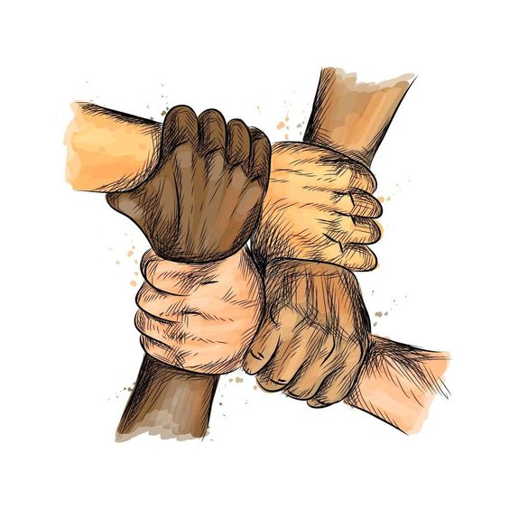

Penyebab
Kebakaran hutan dan lahan disebabkan oleh dua faktor, yaitu faktor manusia dan faktor alam.
Faktor manusia seperti pembukaan lahan pertanian dengan cara membakar, pembalakan liar,
perladangan berpindah, dan aktivitas pembakaran sampah.
Faktor alam seperti petir dapat menjadi penyebab kebakaran hutan. Namun, kebakaran alami
ini cenderung lebih langka dibandingkan dengan kebakaran yang disebabkan oleh aktivitas manusia.
Dampak Lingkungan
Dampak lingkungan dari kebakaran hutan dan lahan antara lain kerugian ekosistem yang mengakibatkan kehilangan biodiversitas, dan merusak habitat alami.
Emisi gas rumah kaca seperti karbon dioksida (CO2) dan metana (CH4) ke atmosfer, berkontribusi pada perubahan iklim global.
Kehilangan tanah dan nutrien yang memengaruhi kualitas tanah dan ketersediaan air.

Pencegahan dan Penanggulangan
Pencegahan dan penanggunalangan kebakaran hutan dan lahan dengan sistem pemantauan seperti satelit dan sensor udara dapat membantu mendeteksi hotspot kebakaran dengan cepat.
Pengendalian api dengan menggunakan alat-alat seperti helikopter, pesawat pemadam kebakaran, dan tim pemadam kebakaran darat.
Pendidikan dan kesadaran masyarakat tentang bahaya kebakaran hutan dan lahan, serta promosi praktik-praktik aman, diharapkan dapat membantu mengurangi risiko kebakaran yang disebabkan oleh aktivitas manusia.